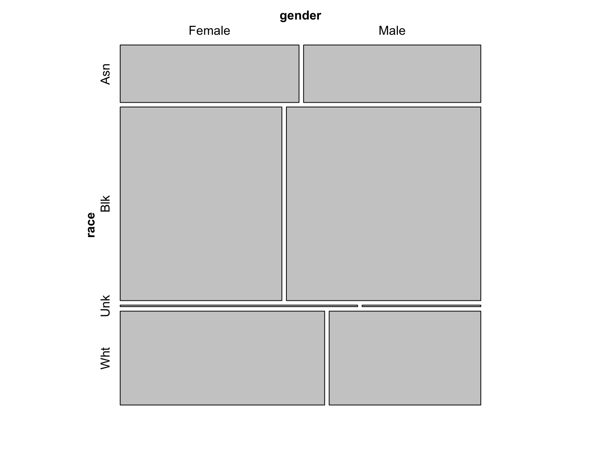

Databrary: Advancing discovery
Rick Gilmore
2020-07-06 15:50:30


Agenda
- What is Databrary?
- What makes Databrary special?
What is Databrary?
A restricted access data library
specialized for storing, streaming, and sharing
video & audio recordings
collected as research data & documentation
- Hosted at New York University (NYU)
- 575 Institutions; 1,600+ researchers; 55K+ hours of video + other data
- Opened 2014
- Supported by NSF, NIH, DARPA, & private foundations
What makes Databrary special?
Access restricted to researchers
Researchers must be authorized by institutions
Authorization grants site-wide, not just project-specific access
Sensitive & identifiable data shared only with participant permission
Consistent site-wide sharing release levels
Video as data…
Messinger, D. (2014). Facial expressions in 6-month old infants and their parents in the still face paradigm and attachment at 15 months in the Strange Situation. Databrary. Retrieved July 6, 2020 from http://doi.org/10.17910/B7059D
Jayaraman, S., Smith, L.B., Raudies, F. & Gilmore, R.O. (2014). Natural Scene Statistics of Visual Experience Across Development and Culture. Databrary. Retrieved July 6, 2020 from http://doi.org/10.17910/B7988V
Video as documentation…
Bahrick, L.E. (2017). Multisensory Attention Assessment Protocol (MAAP). Databrary. Retrieved July 6, 2020 from http://doi.org/10.17910/B7.326
Adolph, K., Gilmore, R.O. & Soska, K. (2019). Play and Learning Across a Year (PLAY) Project. Databrary. Retrieved July 6, 2020 from http://doi.org/10.17910/b7.876
Sort, filter, & search by participant characteristics
Access all data via API
if (databraryapi::login_db(params$databrary_login)) {
vol_8_meta <- databraryapi::download_session_csv(vol_id = 8)
} else {
message("Login to Databrary failed.")
}## Login successful.
Tamis-LeMonda, C. (2013). Language, cognitive, and socio-emotional skills from 9 months until their transition to first grade in U.S. children from African-American, Dominican, Mexican, and Chinese backgrounds. Databrary. Retrieved December 18, 2019 from http://doi.org/10.17910/B7CC74
Reproducible workflows right from the start
rog1@psu.edu https://gilmore-lab.github.io/2020-07-09-noldus/
Stack
This talk was produced on 2020-07-06 in RStudio 1.3.959 using R Markdown and the reveal.JS framework. The code and materials used to generate the slides may be found at https://github.com/gilmore-lab/2019-07-09-noldus/. Information about the R Session that produced the code is as follows:
## R version 4.0.0 (2020-04-24)
## Platform: x86_64-apple-darwin17.0 (64-bit)
## Running under: macOS Catalina 10.15.5
##
## Matrix products: default
## BLAS: /System/Library/Frameworks/Accelerate.framework/Versions/A/Frameworks/vecLib.framework/Versions/A/libBLAS.dylib
## LAPACK: /Library/Frameworks/R.framework/Versions/4.0/Resources/lib/libRlapack.dylib
##
## locale:
## [1] en_US.UTF-8/en_US.UTF-8/en_US.UTF-8/C/en_US.UTF-8/en_US.UTF-8
##
## attached base packages:
## [1] stats graphics grDevices utils datasets
## [6] methods base
##
## other attached packages:
## [1] forcats_0.5.0 stringr_1.4.0 dplyr_1.0.0
## [4] purrr_0.3.4 readr_1.3.1 tidyr_1.1.0
## [7] tibble_3.0.1 ggplot2_3.3.1 tidyverse_1.3.0
##
## loaded via a namespace (and not attached):
## [1] Rcpp_1.0.4.6 vcd_1.4-7
## [3] lubridate_1.7.9 lattice_0.20-41
## [5] zoo_1.8-8 revealjs_0.9
## [7] assertthat_0.2.1 digest_0.6.25
## [9] lmtest_0.9-37 R6_2.4.1
## [11] cellranger_1.1.0 backports_1.1.8
## [13] reprex_0.3.0 evaluate_0.14
## [15] httr_1.4.1 pillar_1.4.4
## [17] rlang_0.4.6 curl_4.3
## [19] readxl_1.3.1 rstudioapi_0.11
## [21] blob_1.2.1 databraryapi_0.2.3
## [23] rmarkdown_2.3 munsell_0.5.0
## [25] tinytex_0.23 broom_0.5.6
## [27] compiler_4.0.0 modelr_0.1.8
## [29] xfun_0.14 pkgconfig_2.0.3
## [31] htmltools_0.5.0 tidyselect_1.1.0
## [33] fansi_0.4.1 crayon_1.3.4
## [35] dbplyr_1.4.4 withr_2.2.0
## [37] MASS_7.3-51.5 grid_4.0.0
## [39] nlme_3.1-147 jsonlite_1.6.1
## [41] gtable_0.3.0 lifecycle_0.2.0
## [43] DBI_1.1.0 magrittr_1.5
## [45] scales_1.1.1 cli_2.0.2
## [47] stringi_1.4.6 fs_1.4.1
## [49] xml2_1.3.2 ellipsis_0.3.1
## [51] keyring_1.1.0 generics_0.0.2
## [53] vctrs_0.3.1 tools_4.0.0
## [55] glue_1.4.1 hms_0.5.3
## [57] yaml_2.2.1 colorspace_1.4-1
## [59] rvest_0.3.5 knitr_1.28
## [61] haven_2.3.1## Logout Successful.## [1] TRUE